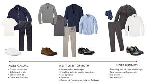
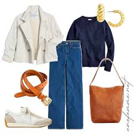
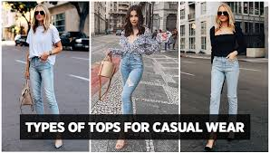

What is Casual Chic?
Casual Chic is a fashion style that combines the relaxed comfort of casual wear with the sophistication of chic pieces. It’s all about looking stylish without appearing too formal or overly done. Think of it as the perfect balance between elegance and ease.
Key Pieces for Casual Chic
- Oversized Sweaters: Pair them with skinny jeans or leggings for a cozy yet polished look.
- Denim: A staple in any wardrobe, denim in the form of jeans, jackets, or skirts can be dressed up or down.
- Stylish Sneakers: Comfortable and trendy, a good pair of sneakers can complete any casual chic outfit.
- Statement Accessories: Use accessories like scarves, watches, or minimalist jewelry to elevate your look.
Casual Chic Outfit Ideas



Tips for Perfecting Casual Chic
Here are some quick tips to help you nail the Casual Chic look:
- Opt for neutral colors as your base and add pops of color with accessories.
- Invest in high-quality basics that you can mix and match.
- Don’t be afraid to mix casual items with more formal pieces, like pairing a blazer with jeans.
- Keep your makeup natural and your hair styled in loose, effortless waves.